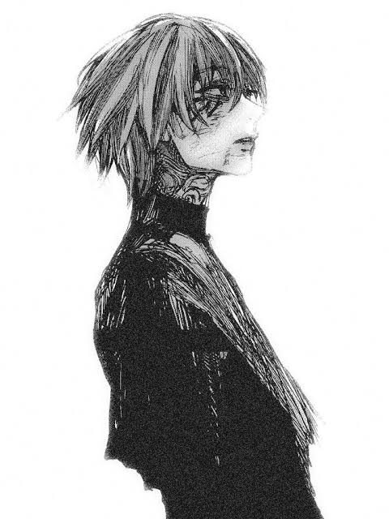

Все про меня и мою одержимость

Обо мне
Пытаюсь стать фронтенд разработчиком, повторяю js/css/html, тону в своих тревогах и попытках стать дисциплинированным. Надеюсь этот простой сайт изменит мою жизнь.
Я стану лучше, я буду лучше.
Моя одержимость
Я всю жизнь пытаюсь программировать, постоянно связывал свою жизнь с айти. Всю жизнь играю в игры и пытаюсь найти любовь, но сейчас я люблю только Василису(Вот она кстати), игры и программирование. Я одержим всем этим и надеюсь буду одержим вечно, пока меня не сожрут мысли
Мои проекты
- Создал сайт на чисто html и CSS, потом доработал его функциями на JS.
- Создал toDo list используя свой максимум JS.
- По гайду сделал небольшое реакт приложение